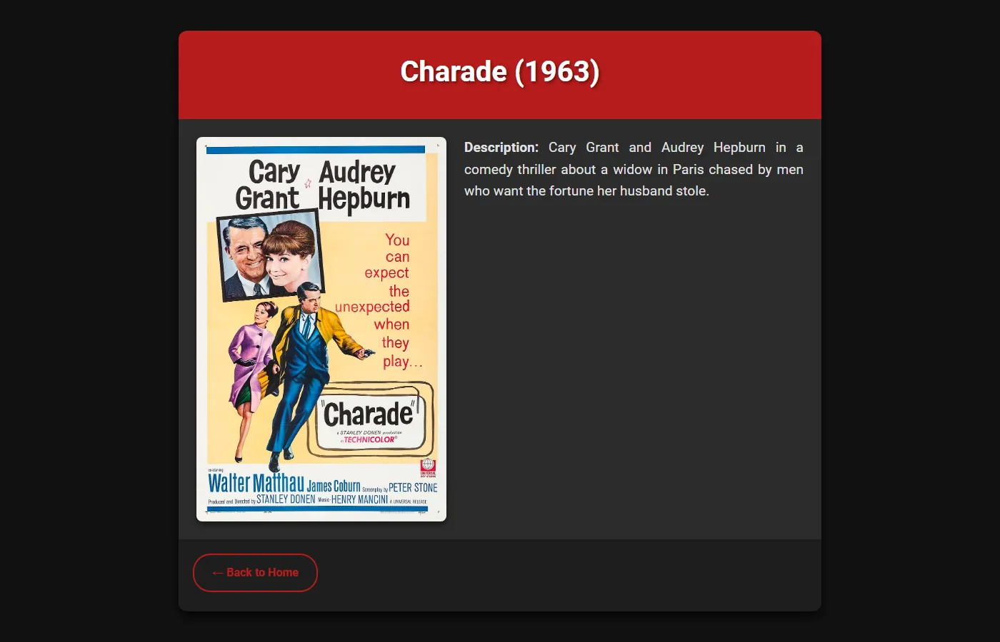

Course project
IMDb Clone
A movie catalogue with a dark poster grid and detail pages, backed by a REST API with JWT sign-in and poster uploads.
- When
- Fall 2024
- Course
- Internet Engineering
- Course grade
- 19.7 / 20

Overview
A small IMDb-style site built as an Internet Engineering assignment: a server-rendered front end for browsing films and a JSON API for managing them.
What I did
- Express backend split into models, controllers, routes and middleware, with PostgreSQL through the Sequelize ORM for users and movies.
- Sign-up and login with bcrypt-hashed passwords and JSON Web Tokens; a middleware checks the token before any change to the catalogue.
- REST endpoints to add, edit and delete movies, with poster uploads handled by Multer; users can only edit or delete the movies they added.
- Server-rendered EJS pages: a poster grid with hover effects and a details page for each film, in a dark theme.
The screenshots were taken from a local run with public-domain posters from Wikimedia Commons; the descriptions were written for the demo.
Gallery
